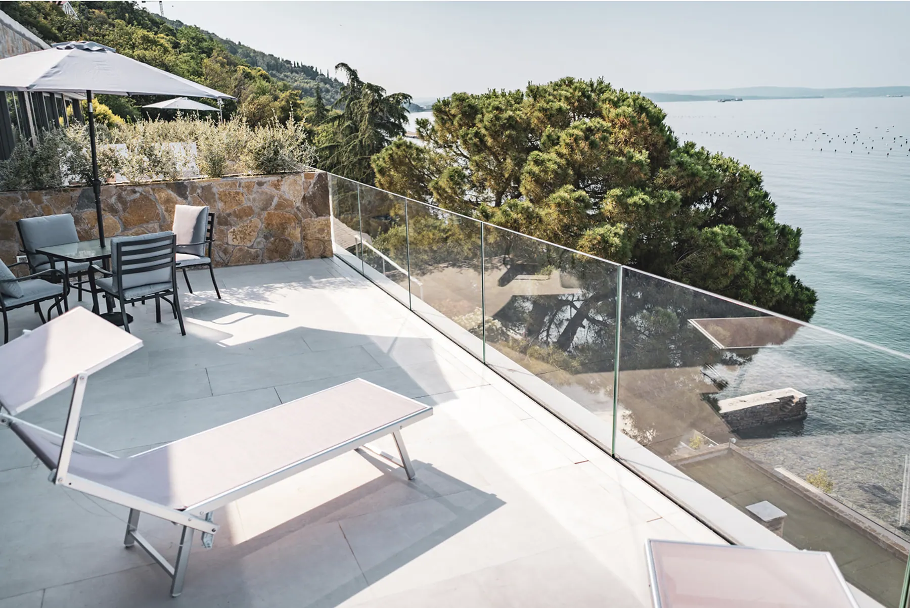
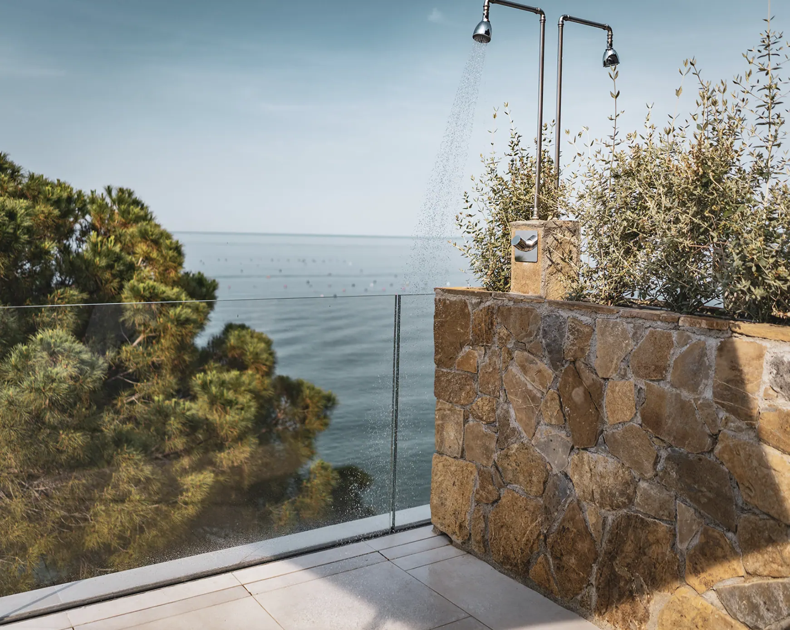
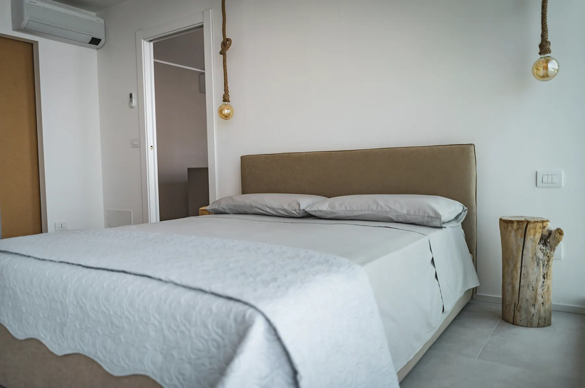
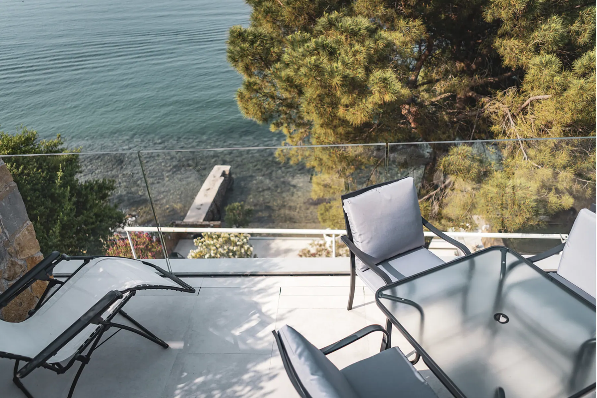

A picco
sul mare
Gli appartamenti si affacciano sull'acqua della costiera triestina.
Seaside Resort
Prova con Chrome, Edge o Safari aggiornati. Intanto guarda le foto degli appartamenti.
Vedi gli appartamentiDemo di portfolio
ricostruzione 3D digitale
Scorri per il tour guidato
Trascina per guardarti intorno
Tre appartamenti, terrazza privata, doccia esterna e accesso diretto al mare.
Seaside Resort è situato presso una delle zone più magiche e belle di Trieste, la costiera triestina. A picco sul mare gli appartamenti offrono tutto il relax e la privacy di cui si può aver bisogno: ognuno dispone di una terrazza privata con doccia e barbecue, grazie alla quale si può ammirare la vista mozzafiato offerta da Seaside Resort.
Tutte le camere sono provviste di aria condizionata, una cucina privata, un bagno e un accesso diretto al mare.



Strada Costiera 206/1, Trieste. Gli appartamenti affacciati sull'acqua.
Video originale di Seaside Resort
Gli appartamenti si affacciano sull'acqua della costiera triestina.
Ogni appartamento ha la sua terrazza, tutta per voi.
Un posto in prima fila davanti all'orizzonte.
Senza dover andare da nessuna parte.
Una vista mozzafiato, silenzio e pace.
Sequenza generata
da una foto reale con AI
Scorri: la galleria si muove con te. Tocca una foto per ingrandirla.
Altre foto, altri dettagli:
Vedi gli appartamenti
Luogo magico, silenzioso e pacifico per una fuga momentanea dalla realtàUn ospite